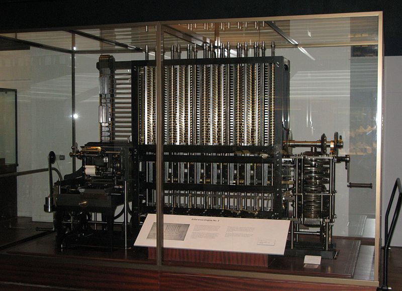

Van még szintaktikus cukor bizonyos struktúrákon: ezek az operátorok. Amikor például leírunk egy olyan matematikai kifejezést, hogy 2a+bc, vagy a szorzásokat *-al jelölve, 2*a+b*c, akkor a szorzás és összeadás műveletek az argumentumaik között szerepelnek. Ezeket hívjuk infix (“közbülső”) operátoroknak. Ha egy ilyen kifejezést a szokásos prefix (“elülső”) funktorokkal szeretnénk leírni, akkor ezt kapnánk:
+(*(2, a), *(b, c))Vannak nyelvek, amelyek ezt preferálják, és vannak olyanok, amelyek a posztfix (“hátulsó”) operátorokat:
((2, a)*, (b, c)*)+… de a Prolog ezekre a megszokott infix jelöléseket támogatja.
Tetszőleges funktorból lehet operátort csinálni. Az egyargumentumú funktorok lehetnek pre- vagy posztfixek, a kétargumentumúak pedig csak infixek. Ahhoz, hogy egy ilyen kifejezést értelmezni lehessen, még azt is kell tudni, melyik operátornak van elsőbbsége - például a szorzást előbb kell elvégezni, mint az összeadást, tehát elsőbbsége van.
A Prologban az ilyen jellegű “beállításokat” olyan szabályokkal lehet megadni, amelyeknek nincsen feje, csak törzse. Néhány példa operátorok definíciójára (ezek alapból be vannak állítva):
:- op(200, fy, -).
:- op(400, yfx, *).
:- op(500, yfx, +).
:- op(1000, xfy, ',').
:- op(1200, xfx, :-).Itt az első 1 és 1200 közti szám adja meg a precedenciát (minél kisebb, annál korábban kell elvégezni az adott műveletet), a második a típusát, és a harmadik magát az operátort.
Hétféle típus létezik:
xfx, xfy, yfx: infix operátorokfx, fy: prefix operátorokxf, yf: posztfix operátorokEzeket úgy kell értelmezni, hogy az f mutatja az operátor helyét, az x és y pedig az argumentumo(ka)t. Ha egy argumentum x-el van jelölve, akkor - amennyiben az is egy operátoros kifejezés - az x operátorának szigorúan kisebb precedenciájúnak kell lennie az f-nél. Ezzel szemben az y esetében ez nem csak kisebb lehet, hanem egyenlő is. A zárójelezés minden előtt elsőbbséget élvez (0 a precedenciája).
Ez így elég absztrakt, nézzünk egy pár példát!
+ operátor yfx típusú, ha egy a + b + c kifejezésem van, akkor ezt nem értelmezhetem úgy, hogy a + (b + c), mert akkor az első + jobboldalán levő b + c kifejezés operátorának precedenciája megegyezik a +-éval (hiszen az is +). Viszont ha (a + b) + c módon értelmezem, ez a probléma nem lép fel: a második + baloldalán levő a + b kifejezés precedenciája ugyan ugyanaz, de ez megengedett mert a baloldali egy y-argumentum. Tehát az yfx operátorokat balról jobbra kell zárójelezni.-a * (b + c * d) kiértékelését először a zárójeles résszel kell kezdeni. Ezt nem értelmezhetem úgy, hogy (b + c) * d, mivel a + precedenciája nagyobb a *-énál, az yfx szerint pedig kisebbnek vagy egyenlőnek kéne lennie. Ezért a helyes értelmezés a b + (c * d). Ezután jön a 200-as precedenciájú 1-argumentumú - operátor, és végül a 400-as precedenciájú *.P :- Q, R, S kifejezés helyes zárójelezése P :- (Q, (R, S)), mivel az xfy típusú vessző operátort jobbról balra kell zárójelezni, és a :- operátor precedenciája a legmagasabb.:- operátor xfx típusú, ezért nem szerepelhet a saját argumentumaként. Egy olyan kifejezésnek, hogy a :- b :- c, nincsen helyes zárójelezése.fy típusú, ezért a --a kifejezés is elfogadható; ha fx típusú lenne, akkor ezt zárójelezni kéne -(-a) alakban.Nem csak különleges karakterekkel megadott funktorokból készíthetünk operátorokat, hanem tetszőleges nevűekből. Ez magyarul kevésbé természetes, mint angolul, de azért nézzünk erre is példát!
:- op(600, xfx, benne_van).
X benne_van L :- tartalmaz(X, L).Ez definiálja a tartalmaz funktor infix változatát. Ezután
?- b benne_van [a, b, c].
true
?- benne_van(b, [a, b, c]).
trueMit ad az alábbi program
t(0+1, 1+0).
t(X+0+1, X+1+0).
t(X+1+1, Z) :- t(X+1, X1), t(X1+1, Z).a következő kérdésekre:
?- t(0+1, A).?- t(0+1+1, B).?- t(1+0+1+1+1, C).?- t(D, 1+1+1+0).Ahogy az előző feladatban is látszott, a matematikai kifejezések a Prolog számára csak struktúrák, és ezért az
?- X = 1 + 2.kérdésre azt a (nem túl sokatmondó) választ kapjuk, hogy
X = 1 + 2Ha rá akarjuk kényszeríteni, hogy kiértékelje a kifejezést, az egyenlőség helyett az is operátort használhatjuk:
?- X is 1 + 2.
X = 3A matematikai kifejezésekben használható az összeadás (+), kivonás/negáció (-), szorzás (*), osztás (/), egészosztás (//), hatványozás (** vagy ^), és a maradékszámítás (mod). Néhány példa:
?- X is 5/2.
X = 2.5
?- X is 9//2.
X = 4 % 9-ben 4-szer van meg (teljesen) a 2
?- X is 2^256.
X = 115792089237316195423570985008687907853269984665640564039457584007913129639936
?- X is 10 mod 3.
X = 1 % 10-nek a 3-mal vett osztási maradéka 1Szintén alkalmazhatóak olyan gyakran használt matematikai függvények, mint az abszolutérték (abs), a szinusz (sin), vagy a természetes alapú logaritmus (log). A ?- help(functions). ad egy teljes listát.
A relációs jelek szintén “kiértékelő erővel” bírnak, tehát pl.
?- 2 + 2 > 3.
trueA nagyobb-egyenlő és kisebb-egyenlő relációk rendre >= és =<, a matematikai egyenlőség és különbözőség pedig =:= és =\=, pl.
?- 2 + 3 = 6 - 1.
false
?- 2 + 3 =:= 6 - 1.
true
?- 2 + 3 \= 6 - 1.
true
?- 2 + 3 =\= 6 - 1.
falseA matematikai kiértékelésnél feltétel, hogy a kifejezésben ne szerepeljen változó. Tehát a rendszer nem tudja azt megválaszolni, hogy ?- X + 2 < X + 3., bármennyire is nyilvánvalónak tűnik nekünk.
Két szám legnagyobb közös osztójának megkeresése klasszikus probléma. Az alábbi megoldás ötlete Euklidész Elemek c. művéből származik (i.e. 300 körül).
Legyen lnko(N, M, O) igaz, ha N és M legnagyobb közös osztója O. Ha a két szám azonos, akkor az osztó is az lesz:
lnko(N, N, N).Ha az első szám a kisebb, akkor azt levonhatjuk a másodikból, és a legnagyobb közös osztó nem változik:
lnko(N, M, O) :-
N < M,
M1 is M - N,
lnko(N, M1, O).Végül, ha a második szám a kisebb, akkor egyszerűen cseréljük meg a két számot, és az előző esethez jutunk:
lnko(N, M, O) :-
N > M,
lnko(M, N, O).Könnyen látszik, hogy a 3. típusú lépés után mindig 2. típusú jön, és a 2. típusú lépés után az N + M összeg csökken. Mivel a számok nem mehetnek 0 alá, előbb-utóbb biztosan eljut az 1. típusú lépéshez, ahol megkapjuk az eredményt.
Teszteljük!
?- lnko(1071, 462, X).
X = 21.A fenti magyarázatok deklaratív jellegűek. A procedurális olvasata a programnak a következő:
N = M, akkor a legnagyobb közös osztó N. Vége.N < M, akkor vonjuk ki M-ből N-et, és menjünk vissza az 1. lépésre.N > M, akkor cseréljük meg N-et és M-et, és menjünk vissza az 1. lépésre.Az ilyen megoldási módszereket algoritmusnak nevezik. Bár Euklidész algoritmusa régi, de már sokkal régebben is léteztek hasonló módszerek, pl. az ókori Mezopotámiában a sumérok már i.e. 2500 körül ismertek algoritmust az osztásra. Maga az elnevezés egy Bagdadban tanító VIII-IX. századi perzsa matematikus nevéből származik, akit (arabosan) úgy hívtak, hogy Muhammad bin Múszá al-Khvárizmí (“Mózes fia Mohamed, Hvárezmből”).
Ha már a kezdeteknél tartunk, az első program, amit tényleg számítógépre írtak, Ada Lovelace (1815-1852) nevéhez fűződik, aki Byronnak, a híres költőnek volt a lánya. A program a Bernoulli-számokat számította ki; a gép pedig, amire írta, egy mechanikus számítógép volt, a Difference Engine. Ezt Charles Babbage (1791-1871) tervezte, de csak születésének 200 éves évfordulájára készült el (viszont működött!).

Most, hogy már tudunk számolni, ki tudjuk számítani egy lista hosszát is:
hossz([], 0).
hossz([_|M], N) :- hossz(M, N1), N is 1 + N1.Egy üres lista hossza 0, egyébként meg a maradék hossza plusz egy.
Ha a fenti definícióban az is helyett =-t használunk, akkor látjuk, hogyan számol:
?- hossz([a, b, c], X).
X = 1+(1+(1+0))Egy másik lehetőség, hogy egy középső argumentumban számon tartjuk az eddigi hosszt:
hossz2([], N, N).
hossz2([_|M], C, N) :- C1 is 1 + C, hossz2(M, C1, N).
hossz2(L, N) :- hossz2(L, 0, N).Itt a hossz2(L1, C, N)-re mindig igaz lesz, hogy a teljes lista hossza az az L1 lista hossza + C-vel egyenlő.
A lényeges különbséget a trace mutatja:
?- trace, hossz([a, b, c], X).
Call:hossz([a, b, c], X)
Call:hossz([b, c], X1)
Call:hossz([c], X2)
Call:hossz([], X3)
Exit:hossz([], 0)
Call:X2 is 1+0
Exit:1 is 1+0
Exit:hossz([c], 1)
Call:X1 is 1+1
Exit:2 is 1+1
Exit:hossz([b, c], 2)
Call:X is 1+2
Exit:3 is 1+2
Exit:hossz([a, b, c], 3)
X = 3
?- trace, hossz2([a, b, c], X).
Call:hossz2([a, b, c], X)
Call:hossz2([a, b, c], 0, X)
Call:C1 is 0+1
Exit:1 is 0+1
Call:hossz2([b, c], 1, X)
Call:C2 is 1+1
Exit:2 is 1+1
Call:hossz2([c], 2, X)
Call:C3 is 2+1
Exit:3 is 2+1
Call:hossz2([], 3, X)
Exit:hossz2([], 3, 3)
Exit:hossz2([c], 2, 3)
Exit:hossz2([b, c], 1, 3)
Exit:hossz2([a, b, c], 0, 3)
Exit:hossz2([a, b, c], 3)
X = 3Az első verzióban, miután elértünk az üres listáig, még hozzá kell adogatnunk az 1-eket a hosszhoz. A második verzióban viszont ilyenkor már nincs más feladatunk, csak visszatérni a már kiszámolt eredménnyel. Ez utóbbit úgy hívják hogy “vég-rekurzió” (tail-recursion), mivel a szabálynak a legvégén van a rekurziós lépés. Az algoritmusok ilyen felírása gyakran hatékonyabb, ahogy azt mindjárt látni fogjuk.
A Fibonacci-számokat úgy képezzük, hogy elkezdjük két 1-essel, és utána mindig az előző két szám összegét vesszük:
1 1 2 3 5 8 13 21 34 55 ...Számoljuk ki az n-edik Fibonacci-számot!
fib(1, 1).
fib(2, 1).
fib(N, M) :-
N1 is N - 1, N2 is N - 2,
fib(N1, K1), fib(N2, K2),
M is K1 + K2.Próbáljuk ki!
?- fib(10, X).
X = 55
?- fib(20, X).
X = 6765Működik, de nagyobb számokra (pl. 40) már nem tudja kiszámolni. A problémát az okozza, hogy a kisebb Fibonacci-számokat feleslegesen újra és újra, rengetegszer kiszámolja.
Próbáljuk ezt is vég-rekurzióval megoldani! Két plusz argumentumként vegyük fel az “előző” két számot (K1 és K2):
fib2(1, M, _, M).
fib2(N, K1, K2, M) :-
N1 is N - 1, K3 is K1 + K2,
fib2(N1, K2, K3, M).
fib2(N, M) :- fib2(N, 1, 1, M).Nézzük meg, mit csinál! Először beállítja K1-et és K2-t 1-re, majd minden lépésben (i) csökkenti az N-et, (ii) a K1 helyére rakja a K2-et, és (iii) a K2 helyére rakja a (régi) K1 és K2 összegét. Ez alapján könnyen belátható, hogy fib2(I, K1, K2, M)-re mindig igaz lesz, hogy az N-I+1-edik Fibonacci szám a K1 lesz (I = N esetén nyilvánvaló; a második szabály pedig nem rontja el).
Így már nagy értékekre is jól működik, hiszen minden Fibonacci-számot csak egyszer számol ki.
Írjatok szabályt, amivel két szám közül ki lehet választani a nagyobbat!
?- max(2, 5, X).
X = 5˛Írjatok szabályt, amivel egy listából ki lehet választani a legnagyobb elemet!
?- maximum([5, 2, 8, 3], X).
X = 8Írjatok szabályt, amivel ki lehet számolni egy listában levő számok összegét!
?- összeg([5, 2, 8, 3], X).
X = 18Írjatok szabályt, ami eldönti, hogy egy lista elemei növekvő sorrendben vannak-e!
?- növekvő([2, 5, 6, 8]).
true
?- növekvő([2, 6, 5, 8]).
falseÍrjatok szabályt, amivel egy listából ki lehet választani elemeket úgy, hogy az összegük egy adott szám legyen!
?- részösszeg([1, 2, 5, 3, 2], 5, X).
X = [1, 2, 2]
X = [2, 3]
X = [5]
...Írjatok egy között(N1, N2, X) szabályt, ami eldönti, hogy az X az N1 és az N2 között van-e (a határokat beleértve)!
?- között(2, 5, 3).
true
?- között(2, 5, 5).
true
?- között(2, 5, X).
X = 2
X = 3
...Írjatok ha, akkor, egyébként és := operátorokat, hogy lehessen ilyeneket írni:
ha X > Y akkor Z := X egyébként Z := YEhhez az kell, hogy a kifejezés így zárójeleződjön:
ha(akkor(>(X, Y), egyébként(:=(Z, X), :=(Z, Y))))Működjön az alábbi kérdés-felelet:
?- X = 2, Y = 3,
X2 = 2 * X, X4 = 4 * X,
ha Y > X2 akkor Z := Y egyébként Z := X4,
ha Z > 5 akkor W := 1 egyébként W := 0.
X = 2
Y = 3
Z = 8
W = 1
X2 = 4
X4 = 8Ez a dokumentum az alábbi könyv 3.3-3.4. fejezete alapján készült:
I. Bratko: Prolog Programming for Artificial Intelligence, 4th Ed., Pearson, 2011.
Kizárólag prefix operátorokkal működnek a Lisp nyelvcsalád nyelvei (Common Lisp, Scheme, Clojure, Racket etc.) Ezeknél a funktor neve is a zárójelen belülre kerül, tehát a fenti példából ez lesz:
(+ (* 2 a) (* b c))Ennek az egyik előnye a következetesség, a másik pedig, hogy a műveletek kiterjeszthetőek több argumentumra. Lispben például értelmes a (+ 1 2 3 4 5) kifejezés, aminek az értéke 15.
Kizárólag posztfix operátorokkal működnek a veremnyelvek, mint pl. a Forth vagy a PostScript. Itt minden operátornak csak egyféle aritása lehet, de cserébe megszabadulunk a zárójelektől. A fenti példa Forthban:
2 a * b c * +Ezt hívják Reverse Polish Notation-nek (RPN, “fordított lengyel jelölés”). Sok számológép(-app) is használja, én is mindig így szoktam számolni.
A magyar nyelv ragozási rendszere mellett egy-egy operátorrá tett szó magában még nem képes természetes mondatok készítésére, de más nyelvekben ez nagyon jól működik. Ezek az ún. izoláló nyelvek - jellemzően ilyenek a (dél)kelet-ázsiai nyelvek, pl. kínai, indonéz vagy thai, de bizonyos mértékig az angol is.
A Prolog beépítve tartalmaz néhány hasznos szabályt, amit most elkészítettünk:
lnko → gcd (de mint matematikai függvény)max → max (de mint matematikai függvény)maximum → max_listösszeg → sum_list